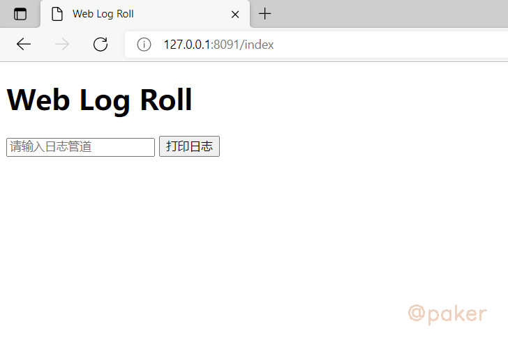
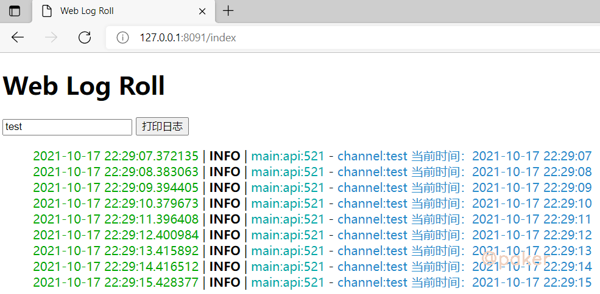

雪重
Python Developer
知识 汗水 灵感 机遇
Server-Sent Events实现实时日志查看器
SSE(Server-sent events)：服务器发送事件。是基于http协议，和WebSocket的全双工通道（web端和服务端相互通信）相比，SSE只是单通道（服务端主动推送数据到web端），但正是由于此特性，在不需要客户端频繁发送消息给服务端，客户端却需要实时或频繁显示服务端数据的业务场景中可以使用。
项目地址：https://github.com/sixgad/sse-sanic-log
1.开发背景
起因是因为看到了这个项目，Dozzle，https://github.com/amir20/dozzle
Dozzle 是一个小型轻量级应用程序，具有基于 Web 的界面来监控 Docker 日志。它不存储任何日志文件。它仅用于实时监控您的容器日志。
使用发现，展示日志网页 header "Content-Type" 为 "text/event-stream"，进而简单开发一套自己的实时日志查看器。
2.client
function pprint() {
var source = new EventSource("/message?channel="+document.getElementById('message').value);
source.addEventListener('message', function (event) {
var data = JSON.parse(event.data);
//console.log(data)
var logtext = preparedata(data.info)
$('#get_message').append(logtext);
}, false);
source.addEventListener('error', function (event) {
console.log('reconnected service!')
}, false);
}
3.server
重点部分来了，python 实现 SSE server，基于Sanic实现
@app.route('/message')
async def message(request):
channel = request.args.get("channel",'log')
async def sample_streaming_fn(response):
id = 0
while True:
id += 1
await response.write('id: {}\nevent: message\ndata: {}\n\n'.format(id, await get_message(channel)))
return response.stream(sample_streaming_fn, content_type='text/event-stream')
目前sanic也有现成的第三方包支持，如sanic-sse，https://pypi.org/project/sanic-sse/
4.使用与展示
项目地址：https://github.com/sixgad/sse-sanic-log
拉取项目代码
git clone git@github.com:sixgad/sse-sanic-log.git
安装依赖包
pip install -r requirements.txt
运行
python run.py
访问 127.0.0.1:8091/index

点击打印日志按钮即可
